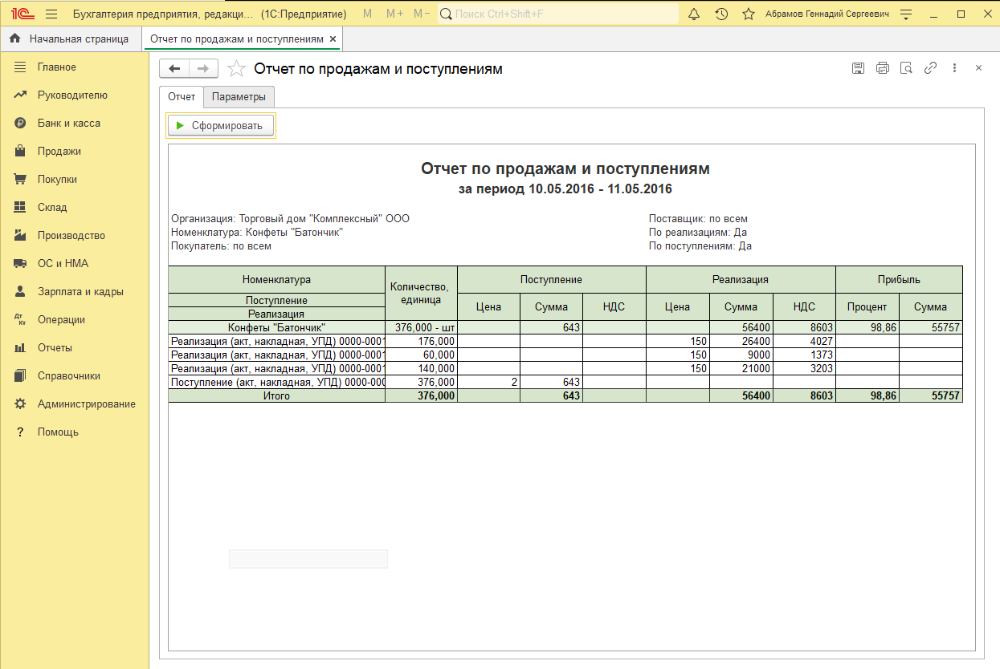
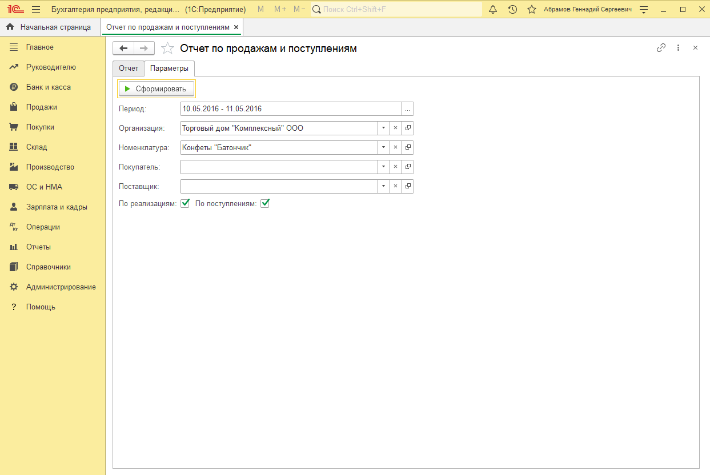

Внешний отчет "Отчет по продажам и поступлениям"
Описание
Внешний отчет "Отчет по продажам и поступлениям"
Отчет формируется по документам "Реализация товаров и услуг" и "Поступление товаров и услуг".
Скачать пробную версию
В пробной версии не печатается наименование организации.
Скачать
Документация
Установка расширения
В режиме предприятия меню "Настройки" - "Параметры" установите галочку "Режим технического специалиста".
Перейти в меню функции для технического специалиста.
Выбрать "Стандартные" - "Управление расширениями конфигурации".
Добавить расширение, согласиться с предупреждением проверки безопасности.
Снять галочку "Безопасный режим".
Перезапустите конфигурацию.
Использование
Открыть меню "Администрирование" - "Печатные формы, отчеты и обработки" - "Рассылки отчетов".
Добавить рассылку, указать тип CSV.
Выполнить рассылку или настроить рассписание.
Отборы отчета:
Период
Организация
Номенклатура
Покупатель
Поставщик
По реализациям (Булево, если отмечен, то есть расшифровка по реализациям)
По поступлениям (Булево, если отмечен, то есть расшифровка по поступлениям)
Группировка отчета:
Номенклатура
Поступление (если отмечено булево)
Реализация (если отмечено булево)
Реквизиты отчета:
Номенклатура Документ "Реализация товаров и услуг", реквизит "Номенклатура"
Количество, единица Документ "Реализация товаров и услуг", реквизиты "Количество", "Ед.изм"
Поступление цена Документ "Поступление товаров и услуг", реквизит "Цена"
Поступление сумма Реквизит "Количество, единица" * Документ "Поступление товаров и услуг", реквизит "Цена"
Поступление НДС Документ "Поступление товаров и услуг", реквизит "НДС"
Реализация цена Документ "Реализация товаров и услуг", реквизит "Цена"
Реализация сумма Реквизит "Количество, единица" * Документ "Реализация товаров и услуг", реквизит "Цена"
Реализация НДС Документ "Реализация товаров и услуг", реквизит "НДС"
Прибыль процент Формула "Прибыль" / "Сумма реализации" *100
Прибыль сумма Формула: "Реализация сумма" - "Поступление цена"* "Количество, единица"
Примечания:
В отчет попадают все документы поступления и реализации за данный период. (если не установлено доп.отборов).
Если установлен отбор "Покупатель", то попадают все "Реализации товаров и услуг" по этому покупателю, а также все документы "Поступление товаров и услуг" по позициям этих реализаций.
Если установлен отбор "Поставщик", то попадают все "Поступление товаров и услуг" по этому поставщику, а также все документы "Реализации товаров и услуг" по позициям этих поступлений.
В отчете должна быть реализована функция по сохранению настроек пользователя.
В отчете должны быть реализованы функции по сохранению и печати отчета.
Отчет должен подключаться во внешние отчеты.
Если в реализации количество меньше, чем в поступление, берется количество реализаций.
Скриншоты
Внешний вид отчета.
Настройка параметров.
Видео
Ваш браузер не поддерживает видео. Скачать видео можно по ссылке ниже.
Как установить отчет.
Скачать видео
Ваш браузер не поддерживает видео. Скачать видео можно по ссылке ниже.
Как использовать отчет.
Скачать видео
Ваш браузер не поддерживает видео. Скачать видео можно по ссылке ниже.
Как удалить отчет.
Скачать видео
Примеры
Пример выходного файла отчета